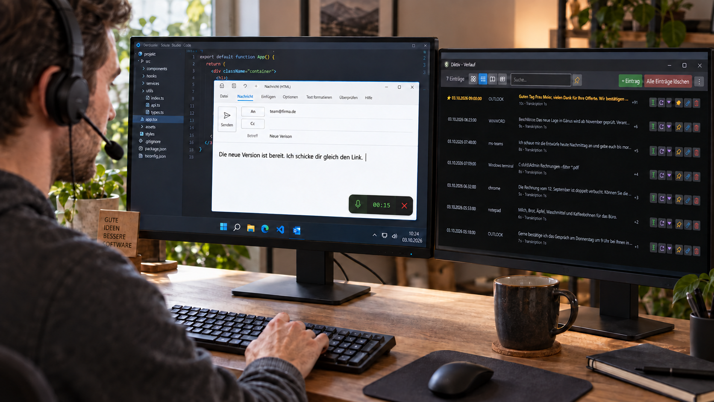

Dein Text. Am richtigen Ort.
Taste halten, sprechen, loslassen. Dein Text landet im Eingabefeld, in dem du arbeitest.
Die Antwort weisst du schon. Sprich sie einfach aus. Diktiv schreibt für dich ins Mail, ins Dokument oder in den Chat. Die Spracherkennung bleibt auf deinem PC.
Für Windows 10 und 11 · Ohne Konto oder Abo

Die wichtigsten Werkzeuge für deine Diktate. Alles hier gehört zur Gratisversion.
Taste halten, sprechen, loslassen. Dein Text landet im Eingabefeld, in dem du arbeitest.
Whisper erkennt die Sprache auf deinem Rechner. Deine Aufnahme muss dafür nicht in eine Cloud.
Hinterlege Namen und besondere Wörter als Hilfe für die Spracherkennung.
Frühere Diktate suchen, bearbeiten und erneut einfügen. Wichtige Einträge kannst du anheften.
Wähle die Einfügemethode pro Programm. Bei Bedarf tippt Diktiv den Text Zeichen für Zeichen.
Passe die kleine Aufnahme-Anzeige an deinen Arbeitsplatz an, etwa ihre Position und Deckkraft.
Für kurze Nachrichten, Antworten und Gedanken im Alltag. Du weisst vor der Installation, was enthalten ist.
Windows 10 ab Version 1809 oder Windows 11 und ein Mikrofon. Eine Grafikkarte kann beschleunigen, ist aber nicht nötig.
Gratis im Microsoft Store ↗Aktuell mit deutschem Spracherkennungsmodell im Download enthalten.
Diktiv wird von Michael Aebi in der Schweiz entwickelt. Die Geschichte dahinter beginnt mit dem Wunsch, Gedanken festzuhalten, ohne dafür die Arbeit unterbrechen zu müssen.
Wie Diktiv entstanden ist ↗Für das Diktieren mit dem eingebauten deutschen Modell nicht. Weitere Spracherkennungsmodelle werden bei Bedarf heruntergeladen. Auch die Installation aus dem Microsoft Store benötigt Internet.
In das Eingabefeld, in dem du arbeitest, etwa in Word, Outlook, einem Browser oder Terminal. Für Programme mit besonderen Anforderungen lässt sich die Einfügemethode einstellen.
Die Oberfläche gibt es auf Deutsch, Französisch, Italienisch und Englisch. Die erkennbaren Diktatsprachen hängen vom gewählten Whisper-Modell ab.
Spracherkennung macht Fehler. Lies den Text durch, bevor du ihn verwendest. Diktiv ist kein Medizinprodukt.